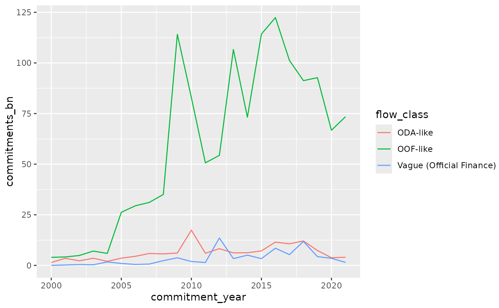

Chinese Development Finance Commitments by Year and Flow Class
Source:R/data.R
gcdf_yearly_flows.RdA time series dataset containing annual Chinese development finance commitments broken down by flow class (e.g., ODA-like, OOF-like, etc.) from the Global Chinese Development Finance Dataset 3.0. Values are in constant 2021 USD.
Format
A data frame with approximately 100 rows and 3 variables:
- commitment_year
Integer. Year of commitment
- flow_class
Character. Classification of financial flow (ODA-like, OOF-like, or Vague Official Finance)
- commitments_bn
Numeric. Total commitments in billions of constant 2021 USD
Examples
# Get total commitments by flow class
gcdf_yearly_flows |>
dplyr::group_by(flow_class) |>
dplyr::summarize(
total_commitments_bn = sum(commitments_bn, na.rm = TRUE)
)
#> # A tibble: 3 × 2
#> flow_class total_commitments_bn
#> <chr> <dbl>
#> 1 ODA-like 139.
#> 2 OOF-like 1292.
#> 3 Vague (Official Finance) 74.5
# Plot time series of commitments by flow class
if (requireNamespace("ggplot2", quietly = TRUE)) {
ggplot2::ggplot(
gcdf_yearly_flows,
ggplot2::aes(x = commitment_year, y = commitments_bn, color = flow_class)
) +
ggplot2::geom_line()
}
